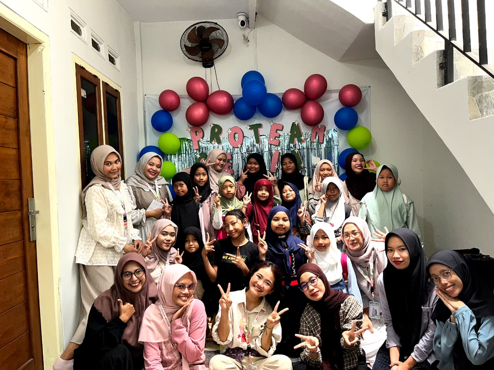

Tingkatkan keterampilan Anda dengan
kursus online terbaik bersama Propath
Protean Course adalah platform pembelajaran dan pendampingan karier yang membantu setiap orang menemukan dan menapaki jalur karier terbaiknya dengan sehat dan berkelanjutan.
Melalui layanan utama kami, Protean Path Career (ProPath), setiap individu dibimbing untuk merancang dan menjalani jalur karier yang sesuai dengan minat, nilai, dan tujuan hidupnya.
